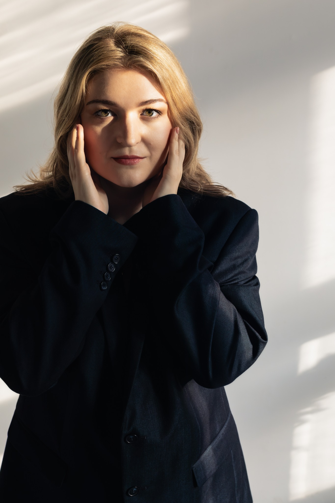

W. A. Mozart
The Magic Flute
Third Lady
Opernhaus Zürich
Details & ticketsPolish mezzo-soprano
Ensemble member at Opernhaus Zürich in the 2026/27 season.
International Opera Studio Zürich · 2023–2025

2026/27 season
W. A. Mozart
Third Lady
Opernhaus Zürich
Details & ticketsS. Rachmaninoff
Old Gypsy Woman
Opernhaus Zürich
Details & ticketsR. Strauss
First Maid
Opernhaus Zürich
Details & ticketsR. Wagner
Grimgerde
Opernhaus Zürich
Details & ticketsJ. Adams
Pasqualita
Opernhaus Zürich
Details & ticketsR. Wagner
Grimgerde
Concert performance
Philharmonie de ParisGrande salle Pierre Boulez
Details & ticketsR. Wagner
First Norn
Concert performance
Philharmonie de ParisGrande salle Pierre Boulez
Details & ticketsR. Wagner
Grimgerde
Concert performance
Carnegie Hall · New YorkStern Auditorium / Perelman Stage
Details & ticketsR. Wagner
First Norn
Concert performance
Carnegie Hall · New YorkStern Auditorium / Perelman Stage
Details & ticketsRecital
Dominika Stefańska: mezzo-soprano
Lidiia Domańska: piano
Organizer and artistic director: Tomasz Domański
Katholische Kirche Heiliggeist · BelpBurggässli 6 · 3123 Belp
Details & ticketsDates and casts may change. Please check the linked venue pages before booking. Times are local to the venue.
Dominika Stefańska is a Polish mezzo-soprano. She is a member of the ensemble at Opernhaus Zürich for the 2026/27 season, following two years with its International Opera Studio. She studied with Bernadetta Grabias in Łódź, then continued her training at the Opera Academy of the Teatr Wielki – Polish National Opera in Warsaw. In 2021, she was a finalist in the Ada Sari International Vocal Competition.
Her repertoire ranges from Classical and Romantic music to works of the twentieth and twenty-first centuries. In the 2026/27 season at Opernhaus Zürich, she will sing the Third Lady in Mozart’s The Magic Flute, the Old Gypsy Woman in Rachmaninoff’s Aleko, Grimgerde in Wagner’s Die Walküre, the First Maid in Strauss’s Elektra, and Pasqualita in John Adams’s Doctor Atomic.
At Opernhaus Zürich, she has appeared as Hippolyta in Benjamin Britten’s A Midsummer Night’s Dream, as well as in productions of Jim Knopf and Sweeney Todd. She has also sung the Dryad in Strauss’s Ariadne auf Naxos and performed in productions of Jakob Lenz and Il viaggio a Reims. Earlier, she performed as Volpino in Haydn’s Lo speziale and Frau Reich in Nicolai’s The Merry Wives of Windsor at Łódź Opera, as well as the Third Nymph in Dvořák’s Rusalka at Poznań Opera. She also appeared there in J. F. Wojciechowski’s Bleee…, a contemporary opera for young audiences.
Alongside her opera work, Dominika Stefańska is also an active concert soloist. She has collaborated with the Poznań Philharmonic Orchestra and distinguished conductors, including Łukasz Borowicz and Andreas Spering, performing works such as Karol Kurpiński’s Te Deum and Wolfgang Amadeus Mozart’s Requiem. She also appeared at the 27th Ludwig van Beethoven Easter Festival in Warsaw, performing Bohuslav Martinů’s Alexandre bis. Her concert activities also include performances at the Kolory Polski Festival and at other major music venues in Poland and Switzerland.
Media
Moniuszko Vocal Competition · Warsaw, 2025
Video previews from YouTube. Playing a video loads the YouTube player.
Source: Lidiia Domańska’s YouTube channel
Photography by Zuzanna Caban
Press
“an intense middle register”
On Erda’s aria from Das Rheingold at the Opera Studio gala in Zürich.
Read full review“beautifully sung”
On the three nymphs in Rusalka at Poznań Opera, sung by Iryna Ushanova-Rudko, Monika Mych-Nowicka and Dominika Stefańska.
Read full review“in an elegant, thoughtful way”
On her interpretations of Haydn and Mozart at the Ada Sari competition.
Read full reviewFor engagements, concert proposals and press enquiries.
{kind=link}
{kind=link}
{kind=link}
{kind=link}
{kind=link}
{kind=link}